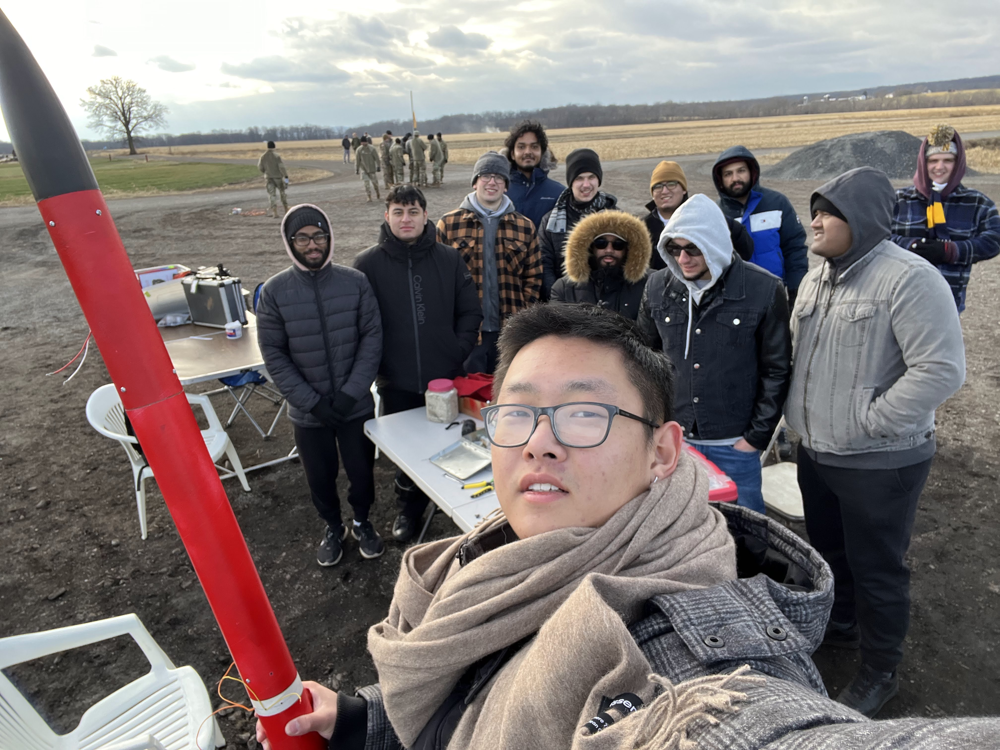

I'm Eric, a results-driven mechanical engineer with a lifelong passion for the integration of engineering and computer science. My journey began with a fascination for taking things apart to understand how they work, and that curiosity has led me to explore the exciting intersection of mechanical engineering and artificial intelligence. After delving into prompt engineering and agentic AI, I've realized the immense potential of these technologies and their transformative impact on the future of engineering.
My mechanical engineering background provides me with a strong foundation in design, analysis, and manufacturing. Proficient in SolidWorks, I leverage FEA to optimize designs and ensure performance. My hands-on experience includes 3D printing, laser cutting (gained during my time at Mechanismic Inc.), and CNC machining (from my coursework). I've completed all core mechanical engineering coursework and am currently preparing for the FE exam. You can explore some of my mechanical projects in my Mechanical Portfolio Link.
Complementing my mechanical skills, I'm actively developing my expertise in software engineering, particularly in areas relevant to AI and robotics. I've worked on data analysis and machine learning projects using Python and have developed Node.js applications that integrate with ChatGPT. My projects, including those related to agentic AI, are available in my Software Portfolio Link.
 I'm particularly passionate about the application of machine learning in engineering. I see tremendous opportunity in combining these fields to create intelligent and adaptable systems. This passion fuels my involvement in extracurricular activities, such as hosting the 2024 SBUHacks hackathon at my university and contributing to the SBU Rocket Team's participation in the NASA Student Launch competition. These experiences have not only honed my technical skills but also cultivated my leadership abilities. I'm a natural leader who values listening to others, readily takes responsibility, and thrives in collaborative environments.
My career goal is to specialize in machine learning for engineering applications. I aspire to leadership roles where I can contribute to innovation and inspire others. I am currently seeking full-time opportunities where I can apply my skills and passion to challenging and impactful projects.